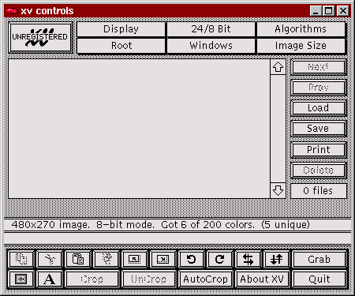
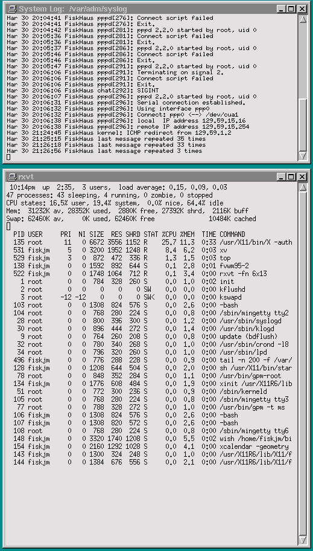
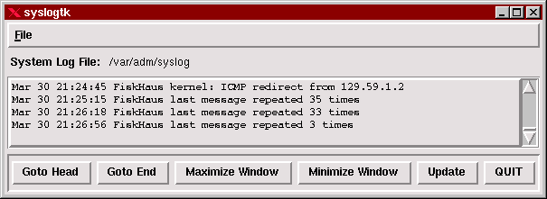
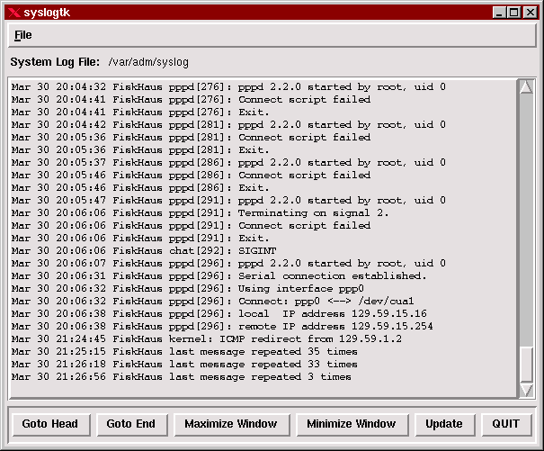
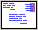

Welcome to The Linux Weekend Mechanic!
Published in the April 1997 Edition of the Linux Gazette
Copyright (c) 1997 John M. Fisk <fiskjm@ctrvax.vanderbilt.edu>The Linux Gazette is Copyright(c) 1997 Specialized Systems Consultants Inc.

| You've made it to the weekend and things have finally slowed down. You crawl outa bed, bag the shave 'n shower 'cause it's Saturday, grab that much needed cup of caffeine (your favorite alkaloid), and shuffle down the hall to the den. It's time to fire up the Linux box, break out the trusty 'ol Snap-On's, pop the hood, jack 'er up, and do a bit of overhauling! |
 Welcome to the April 1997 Weekend Mechanic!
Welcome to the April 1997 Weekend Mechanic!Hey, c'mon in!
Thanks for dropping by! How y'all been doing?
I don't know about you, but life around the Fisk household has been pretty busy of late. I've been having a great semester at MTSU and enjoying my classes which are predictably starting to crescendo in unison into a frenzy of activity. And we're all starting to "mood synchronize..." :-)
I apologize that the articles and such in this edition are going to be a bit short and hurried. I've got a couple hours' worth of time before we leave to visit family and I'll see what I can get written up. I've got a growing notebook full of ideas about which I'd like to write. Which reminds me...
Have I preached recently on the virtues of keeping a notebook...
You say, I haven't...?! :-)
Well, y'all just settle back in for a few minutes while I loosen the belt, take a deep breath, and start in!
Seriously, I'm convinced that keeping a notebook, journal, or just a stash of note and ideas you've come across and jotted down is like brushing and flossing: it's good for hygiene. Mental hygiene, that is. It'll help prevent "Programmer Pattern Baldness", the kind that comes from pulling your hair out trying to remember just the exact invocation of some obscure, and recalcitrant, system utility or repairing that delicately situated configuration file that you were going to make such a small little change to...
Having notes as to what you did to some configuration file; having a hardcopy printout of the docs/manual pages/README files on some utility; or just having a command line invocation scribbled out on the back of the phone bill envelope and stuff into the back of your notebook may REALLY save your "nether parts" some day.
And lest you think that I'm more obsessive-compulsive, anal-retentive than I really am... I've actually got a small pile of legal pads sitting on the shelf next to the computer desk that has all those stream-of-consciousness type scribblings and notes. It's not very well organized, there's a huge amount of redundancy, and some of the stuff is totally illegible or frankly incoherent (probably penned during moments of questionable lucidity at 2:00 AM...). Still, this stuff has come in mighty handy from time to time and it's amusing and instructive to look it over now and then.
I've also found that keeping more or less detailed notes of installation (which I've managed to do quite frequently over the past couple years) have come in VERY handy when I've sat down to sketch out a new installation. I've worked out my own partitioning scheme that's been useful for me, developed my own archiving and upgrading scheme, and so forth based on these notes.
Also, as I alluded to above, it's pretty useful to keep a stash of hardcopy printouts of various README's, manual pages, and so forth. While I appreciate the versatility of online documentation -- info, man pages, HTML, and so forth, nothing beats having a booklet in your hot little hand that you can read without having to wait for Netscape to finish consuming your entire colormap before it loads... :-)
(I know, I know... you've been there, done that, got the t-shirt... :-)
Seriously, having a printout to write all over and mark up is pretty handy. If you keep all those things in some kind of notebook, binder, file folder, or whatever, you'll probably save yourself some aggravation in the future.
Just a thought...
Anyway, I'm done now. So, without further ado...
On with the show!
Hope you enjoy!
John M. Fisk
Nashville, TN
Friday, 28 March 1997
 More Wallpapering Ideas...
More Wallpapering Ideas...After the February WM column, Irek Koziol wrote about the wallpapering ideas that I'd mentioned:
Date: Wed, 12 Feb 1997 15:28:28 -0600
From: Irek Koziol <cft-inc@worldnet.att.net>
Subject: X Window Wallpaper
I was using:
xv -quit -root -max image.gif(If enlarging image is a goal to fit the whole screen ).
Could you please comment on it, and make a followup in LG?
Cordially, George.
Well, let's see what we can say about this...
First, John Bradley's ubiquitous xv program is a definite must-have utility and a veritable "Swiss Army Knife" of graphics goodies. It has, as all good UN*X programs do, a bazillion command line options that could occupy a lifetime of study and reflection. Fortunately, those that you need to know to be productive are limited, and in the confines of the present discussion, can be narrowed down to a manageable number.
Just for the fun of it, start up X and try something like:
xv -help
Then stand back...
When you do this, xv disgorges something like:
Usage: xv [-] [-/+24] [-/+2xlimit] [-/+4x3] [-/+8] [-/+acrop] [-aspect w:h] [-best24] [-bg color] [-black color] [-bw width] [-/+cecmap] [-cegeometry geom] [-/+cemap] [-cgamma rval gval bval] [-cgeometry geom] [-/+clear] [-/+close] [-/+cmap] [-cmtgeometry geom] [-/+cmtmap] [-crop x y w h] [-cursor char#] [-DEBUG level] [-dir directory] [-display disp] [-/+dither] [-drift dx dy] [-expand exp | hexp:vexp] [-fg color] [-/+fixed] [-flist fname] [-gamma val] [-geometry geom] [-grabdelay seconds] [-gsdev str] [-gsgeom geom] [-gsres int] [-help] [-/+hflip] [-hi color] [-/+hist] [-/+hsv] [-icgeometry geom] [-/+iconic] [-igeometry geom] [-/+imap] [-/+lbrowse] [-lo color] [-/+loadclear] [-/+max] [-/+maxpect] [-mfn font] [-/+mono] [-name str] [-ncols #] [-/+ninstall] [-/+nodecor] [-/+nofreecols] [-/+nolimits] [-/+nopos] [-/+noqcheck] [-/+noresetroot] [-/+norm] [-/+nostat] [-/+owncmap] [-/+perfect] [-/+poll] [-preset #] [-quick24] [-/+quit] [-/+random] [-/+raw] [-rbg color] [-rfg color] [-/+rgb] [-RM] [-rmode #] [-/+root] [-rotate deg] [-/+rv] [-/+rw] [-slow24] [-/+smooth] [-/+stdcmap] [-tgeometry geom] [-/+vflip] [-/+viewonly] [-visual type] [-/+vsdisable] [-vsgeometry geom] [-/+vsmap] [-/+vsperfect] [-wait seconds] [-white color] [-/+wloop] [filename ...]
Impressive... eh?
Whoops! Whoa there!! Don't leave me yet...
This isn't as bad as it looks. Trust me... :-)
The basic command line options you'll need to do a bit of root window wallpapering can be limited to the following:
-root -rmode [0-9] -max -maxpect -quit
Now, you can go on and do more fancy things, but the above options will certainly get you going. So, let's take a quick look at what each of these means.
xv -root -rmode -1 ~/images/wallpaper/forest.gif xv: unknown root mode '-1'. Valid modes are: 0: tiling 1: integer tiling 2: mirrored tiling 3: integer mirrored tiling 4: centered tiling 5: centered on a solid background 6: centered on a 'warp' background 7: centered on a 'brick' background 8: symmetrical tiling 9: symmetrical mirrored tiling
Pretty slick, eh?
This is where the serious coolness comes in. You can not only specify your favorite 'ol image to brighten up your X window, but you can do all sorts of nifty things to it as well.
So, I know what you're thinking... "How in the world do I know what each of these means...?!"
Glad you asked.
The easiest way to find out what each of these options does is to start xv, select a file to display, and then use the Root menu item to select the various types of root window displays:

The Root menu item will display the same listing as you saw above. You can use the file browser to locate a file to play with, and then select the various menu options to see what they do. Once you've hit upon an option that you like, jot down which one it is. For instance, if you liked the "integer mirrored tiling" effect, you'd use something like:
xv -rmode 3 -quit ~/images/wallpaper/forest.gif
And xv would wallpaper your root window with the forest.gif image using integer mirrored tiling.
And you thought this was going to be hard... :-)
One last note: if you use the -rmode option, you don't have to specify the -root option as well as this is implicit in -rmode
This option causes xv to display the first image given on the command line and then quietly exit once it's done. This is how you can add a stanza to a script or startup file and have xv wallpaper the root window and peacefully terminate once this is done.
See, that wasn't so bad, now was it. So, tying it all together: suppose that you had a directory off your home dir called "/images/wallpaper/" that you put your wallpaper collection in. You want to use that nifty forest.gif image and have it integer tiled. Easy as cake:
xv -rmode 1 -quit ~/images/wallpaper/forest.gif
Viola!, instant gratification! :-)
Now, you can easily do this from any xterm or rxvt command line. Heck, you can do this from emacs or vi if you know how to execute a shell command...
(pssss...! Hey buddy... yeah, you. If you're using vi, just try something like:
:!xv -rmode 1 -quit ~/images/wallpaper/forest.gifand you're golden).
The more convenient way to do this is to put it in one of your start up scripts. I've recently started using FVWM-95 and so this would go in my ~/.fvwm2rc95 file under the "InitFunction" heading:
AddToFunc "InitFunction" "I" Module FvwmAuto 200 + "I" Module FvwmButtons + "I" Module FvwmTaskBar + "I" Exec syslogtk -geometry +2+2 & + "I" Exec rxvt -ls -sb -sl 400 -fn 9x15 -geometry 80x32 & + "I" Exec /usr/X11/bin/xv -rmode 1 -quit ~/forest.gif &
Other window managers will have their own initialization files that will need to be customized. RTFM.
And speaking of RTFM, there's an extensive manual that John Bradley has provided with xv. "Everything You Always Wanted To Know About XV, And Were Afraid To Ask...". On my 'ol Slackware '96 distribution, the documentation gets installed to /usr/doc/xv and the file to have a look at is the xvdocs.ps file. It's a HUGE postscript document describing the program and all of its options and operations in detail. If you're using xv much at all, this is required reading. You can use one of the postscript viewers such as ghostscript or my current favorite, MGV, to view the file.
Here are just a couple other thoughts on the subject of wallpapering...
Keep the number of image colors small.
If you haven't noticed, one of the more annoying things about X is that it's remarkably easy to "use up the colormap". Programs like Netscape are notorious for allocating a hoggish number of entries, leaving other programs unable to allocate colors, OR, having to install their own private colormaps. When this happens, you end up with that migraine-grinding, wildly psychedelic color flashing when you move from one window to the next.
One way to help prevent this is to use images with a small number of colors. To determine how many colors are being use, load the image and watch the status message that xv will print in the control window. Another option, and one that's easy to use on the command line, is to use the xli program:
xli -ident forest.gif forest.gif is a 256x256 GIF89a image with 32 colors
To limit the number of colors, use XV's Save function and, if you're saving the image in GIF format, you can select the "Reduced Color" option. You can also use the excellent ImageMagick suite of graphics tools: use the "convert" program with the -colors option to specify the desired maximum number of colors to use:
convert -colors 24 forest.gif forest_rc.gifis one way to accomplish this. If you're handy with the NetPBM utilities, then I'm sure that you can do a similar thing.
Add wallpapering to your favorite buttonbar or menu.
Got a collection of favorite images and just can't decide which one you like? Do you change your wallpaper more often than your socks? Do yourself a favor: add this stuff to your favorite menu or buttonbar and have it available at a whim's notice!
For example, if you're using FVWM-95 and the FvwmButtons module, you could add something like:
*FvwmButtons forest gif.xpm Exec "" xv -rmode -1 -quit ~/wallpaper/forest.gif & *FvwmButtons clouds gif.xpm Exec "" xv -rmode -1 -quit ~/wallpaper/clouds.gif & *FvwmButtons trees gif.xpm Exec "" xv -rmode -1 -quit ~/wallpaper/trees.gif & *FvwmButtons space gif.xpm Exec "" xv -rmode -1 -quit ~/wallpaper/space.gif & *FvwmButtons GTO gif.xpm Exec "" xv -rmode -1 -quit ~/wallpaper/GTO.gif &and so forth.
Now, you can change the root window as easy as clicking on the buttons! You can also do something like this with menus. Just create your own custom submenu and add it to your present menu.
Also, even if you're not using a window manager that provides its own buttons, (such as OpenWindows), you can still use programs such as tkgoodstuff or tycoon as "aftermarket add-on's" and end up with a splendid buttonbar nonetheless. You can find these programs at any well-stocked Linux FTP archive or simply do an Alta-Visa or Yahoo search for them.
So, how about that? Think that this will give you something to do for a while? Messing around with this stuff can be a HUGE time sink, so for those dreary rainy April Saturday afternoons, just tell your spouse that you're going to be busy all day doing a bit of "wallpapering..."
Enjoy!
John
Wallpapering with xlock...!?Yup... :-)
Since we're on the subject of wallpapering anyway, I thought I'd throw this out for what it's worth.
There are actually quite a variety of ways to spiff up your dull and lifeless root window. And if you're still using that hideous black and white cross-hatch when X starts...
We're here to the rescue!! Hang on!
From all of the various doodles and scribblings that that I've made over the past couple months on the subject, there seems to be AT LEAST three basic things that you can do with wallpapering your root window:
You can easily try colors or colors+textures by using the xsetroot program. Use the -solid option with the name of a color to set the root window color to some value. Also, try using the -mod [x] [y] option which gives you a plaid texture. You need to specify an x and y value for the pattern, which are numbers between 0 and 16. You also can specify the foreground and background colors to use with this using the -fg and -bg options, respectively.
We've talked at some length about using an image in the root window using a program such as xv. See the previous article in this months column for all the gory details. FWIW, you can also use the xsetroot with the -bitmap [filename] option to use a black and white bitmap image if you'd like.
Finally, you can use animations on your root window. There are all kinds of nifty little doodad's and thingamabob's around to do such things. My favorite is the xearth program, although I've fooled with and enjoyed the xfishtank and the xantfarm programs as well. You should be able to find these at your friendly neighborhood Linux FTP site or on that Christmas CD your spouse reluctantly bought for you... :-)
Here's yet another suggestion that you might not have tried...
Did you know that you can use the xlock program as wallpaper?
No, seriously... You gotta give this a try!
The xlock program has almost as many command line options as xv. Again, if you invoke it with the secret password...
xlock --help
xlock: bad command line option "--help"
usage: xlock [-help] [-resources] [-display displayname] [-name resourcename]
[-/+mono] [-/+nolock] [-/+remote] [-/+allowroot] [-/+enablesaver]
[-/+allowaccess] [-/+grabmouse] [-/+echokeys] [-/+usefirst] [-/+v]
[-/+inwindow] [-/+inroot] [-/+timeelapsed] [-/+install] [-delay usecs]
[-batchcount num] [-cycles num] [-saturation value] [-nice level]
[-timeout seconds] [-lockdelay seconds] [-font fontname] [-bg color]
[-fg color] [-username string] [-password string] [-info string]
[-validate string] [-invalid string] [-geometry geom] [-/+use3d]
[-delta3d value] [-right3d color] [-left3d color] [-program programname]
[-messagesfile filename] [-messagefile filename] [-message string]
[-mfont fontname] [-imagefile filename] [-gridsize] [-neighbors] [-mode ant
| bat | blot | bouboule | bounce | braid | bug | clock | demon | eyes
| flag | flame | forest | galaxy | geometry | grav | helix | hop | hyper
| image | kaleid | laser | life | life1d | life3d | lissie | marquee | maze
| mountain | nose | petal | puzzle | pyro | qix | rock | rotor | shape
| slip | sphere | spiral | spline | swarm | swirl | triangle | wator
| world | worm | blank | random]
Type xlock -help for a full description.
Impressive...
(... and if you're wondering why I didn't try the xlock -help option as it suggested, the reason is that of brevity. Try this yourself to get the FULL description!)
The options that you want are the -inroot and the -mode [name] options. To install your favorite galaxy, pyro, blot, rock, rotor, swarm, or whathaveyou onto your root window, just do something like:
xlock -inroot -mode swarm &
And stand back and enjoy the show. Of course, you can get a bit dizzy watching some of these, but it's kinda fun watching the bats careen around and the swarm chasing that one little bugger all over the screen. Add a couple invocations like this to your favorite 'ol buttonbar or menu and you'll be the envy of all your neighbors. People will think you're pretty cool... Maybe you'll get a promotion... The cute gal/guy in the dorm next door will tell all their friends that you just wrok their world!... Maybe your complexion will clear up... Who knows...? It's worth a try... :-)
So, what do you think? Got any other ideas or suggestions? If you do, drop me a note and I'll be glad to include it in the next column. Who knows, maybe we'll have to write a mini-HOWTO on X Window wallpapering... :-)
See ya!
John
System Logging Ideas...Several months ago, I had someone run a Satan attack on my home Linux system (a standalone PC connected via dialup PPP to the INTERNET) shortly after I'd gotten a dialup connection. The idiot got no information as I had sendmail configured for remote mail queuing. Without going into all the details, suffice it to say that after getting pretty angry about this and making several phone calls and sending email demands of explanations, the perpetrator remains anonymous.
Now, there are several things that I know next to nothing about, and UN*X/Linux security is one of them. For my standalone system, I closed a couple holes by simply no longer loading up either inetd or sendmail at system boot. I mention this not so much to talk about security as to segue into the topic of system logging.
After this incident, I starting wondering how to keep track of "what's going on" with my system in terms of processes running, login attempts, debugging/error messages, and so forth. One solution to this was provided by a reader quite some time ago which involved dumping ALL system logging information to an unused VT by adding a stanza such as the following to /etc/syslog.conf:
*.* /dev/tty9I won't go into the details of this except to mention that this sends all logging information to VT number 9.
It occurred to me a bit later that I could also dump this information to a file and then run tail on it to see a continuous printout of the information. Under X, this is accomplished easily by running an xterm or rxvt and then running tail on the system logging file. To do this, you could:
*.* /dev/tty9 *.* /var/adm/syslogThis gives you a file with logging information from all facilities and from all all levels.
rxvt -sb -sl 200 -e tail -n 50 -f /var/adm/syslog &My own preference is to use rxvt since it enjoys a much smaller memory footprint than xterms typically do. The -sb option gives me a very handsome scrollbar; -sl 200 saves 200 lines of output at a time; and the -e option instructs rxvt to execute everything following it on the command line.
After doing this you can decrease the window size substantially by using a small font. Depending on how rxvt was compiled, you may be able to interactively change the font size using the ALT-< key combination (or the ALT->) -- on rxvt version 2.18 this causes a smaller font to be used. You can also specify which font to use when you invoke rxvt itself using the -fn option. Using a six or seven point font gives you a small, but still readable window.
Now, if you start up a second rxvt and run top in it, you'll find that this will give you a good idea of what's going on with your system. On my box, this looks like:

Obviously, there are MUCH more elegant and sophisticated solutions than running a couple rxvt's with top and tail. However, this is VERY easy to setup and, if you add a stanza to do this in your window manager configuration file, or add this to a menu or buttonbar, then it's very convenient as well.
I've also tinkered around with writing a small tcl/tk script that some of you might be interested in. The syslogtk script is a VERY simple little program that allows you to easily view any of the logging files under /var/adm. On startup, it adds a menu item for each readable, regular file under /var/adm which will then allow you to view that file. It also automagically loads the /var/adm/syslog file. I've added a couple buttons to resize the text window, move to the head and end of the file, and to update the logging (this was a bit of a kludge since I found that the tail process would "hang" after pppd terminated. Any ideas as to why this would happen... anyone?)
I've used this for the past little bit and really like it -- especially since it lets me quickly see the status of things such as mail and print jobs. Here's a screen dump of it in its "normal" and "maximized" states:

The syslogtk program minimized.

The syslogtk program maximized.
I'm sorry that I don't have a lot of time to discuss this simple utility more. If you're interested in it, the sources are available here. You can save the following link to file OR simply load it up in your browser and save it as a text file:
As usual, this comes with ABSOLUTELY NO WARRANTEE: if anything breaks, you get to keep both pieces... :-)
I'm hoping, when I have a bit more time, to write up a simple guide to setting up and using system logging with the excellent sysklogd package. For the time being, you're on your own. BTW, I wrote syslogtk under tcl/tk versions 7.6/4.2 -- there's nothing terribly fancy in them so it'll likely work under older and newer versions as well. Have a look at the beginning of the script file for items that you might want to customize, especially the file that gets loaded when the program starts. The code isn't terribly robust at the moment, so if it can't find something, it'll likely just whine and do nothing...
Well, that should about do it!
Hope you have fun. If you have any ideas or suggestions, drop me a note OR, better yet, drop the LG editor (Marjorie Richardson at SSC) a letter or article!
Cheers,
John
Closing Up The ShopWell, again, I'm sorry that the articles have been a bit more rushed than I'd hoped this month. I just got back from visiting Bill and Sandy Emmett -- my wife's brother and his wife and their kids -- over Easter Weekend. We had a great time and even got to do a bit of Linux'ing! I recently bought some old computer parts "As Is" from the church my wife and I attend and, after a bit of card swapping and cable twiddling, I managed to get a working 486DX/4 100 box working. I also found that it came with an Artisoft AE/2 NIC.
Hmmm... Serious Fun on the Horizon, Good Buddy...
My brother-in-law outfitted me with an old WD-8003 card he had lying around and we were able to get some basic networking set up under Linux and Win95. So, I'm going to be learning a bit of networking! YeeeeHaaaa!!
That is, if I ever manage to get my schoolwork done so that I can pass Calc III and Software Engineering... :-(
We'll have to see.
The other bit of news is that I'm planning on heading out to the 'ol 1997 Linux Expo at NCSU again this year!
Time for a road trip!! :-)
I'm getting seriously excited about this as the speaker roster looks like a "Heavy-Weight Who's Who's in the Linux Community" round up. The conference talks all look interesting and, if this is anything like last year's Expo, it should just be a WHOLE LOTTA FUN. If any of you still haven't heard about this and you're within any kind of driving, flying, running, hitchhiking, or crawling distance from North Carolina State Univ., then by all means...
GO!!
There's all kinds of information available at the Linux Expo site. I know that they've put in a HUGE amount of work on this together with the folks at RedHat Software, Inc.. Drop by the page and get the low down on speakers, exhibitors, events, conference talks, and so forth.
Several of us from 'ol Middle Tenn State Univ. are planning on taking a road trip and making a weekend of this. We'll be walking around with our pocket protectors and name badges like the rest of you... if you happen to see:
Walk right up, introduce yourself, and shake a hand! We'd love to chat with you. If I get the chance, I'll bring along the 'ol Canon and try to get some shots of the going's on. If I can get my hands on a scanner, I might even put a couple of these up in the next column (with the permission of the Expo folks, of course).
Anyway, hope to see you all there!!
Take care, Happy Linux'ing, and Best Wishes,
John M. Fisk
Nashville, TN
Sunday, March 30, 1997
 If you'd like, drop me a note at:
John M. Fisk <fiskjm@ctrvax.vanderbilt.edu>Last Modified: $Date: 2002/10/09 22:24:18 $
Weekend Mechanic #1, November 1996
Weekend Mechanic #2, December 1996
Weekend Mechanic #3, February 1997
![[ TABLE OF CONTENTS ]](../gx/indexnew.gif)
![[ FRONT PAGE ]](../gx/homenew.gif)